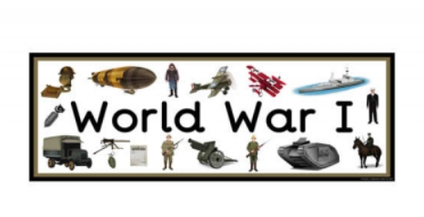

This project is about WW1. In this project, you go back in time through WW1 and your job is to pick between 2 or more choices to try to live.
The most common way to die is by getting bombed and there are 12 files and 16 different choices. Also, even if you die, you can just start a new life.
Some challenge and takeaway is trying to make all the link go to differnt files without crashing and getting a 101
Link about the projectI make a very good movie webpage with my partner (Yu) by using HTML and CSS in Replit.
We decided to make our webpage based on Rick and Morty, so we created a new character named moron because if its rick and morty, it is copywrite and we get copywrite fee. We worked together to accomplish our goal, each of us worked on different parts of the coding, we kept in contact throughout the entire project to ensure we had reached all the requirements necessary for a 100.
Some takeaway and challenge is making the border around the image also I did nothing and only edit the part Yu said. Its hard becuase Yu is very smart and I am very dumb. His instruction are very complex and I don't understand it.
One big thing I learn from this project is communication. He said a lot of things to make the movie-webpage better and I have to ask him a lot of questions on how to put the code in. 